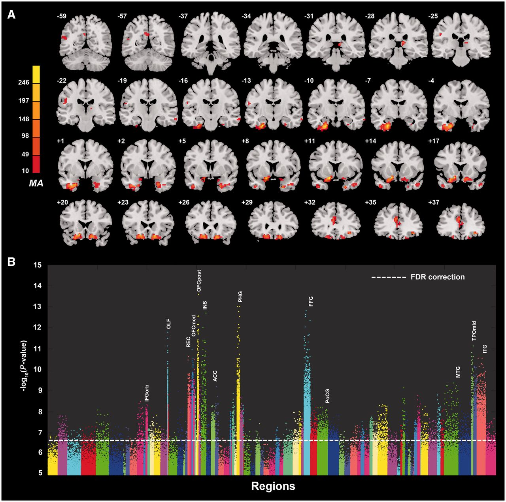
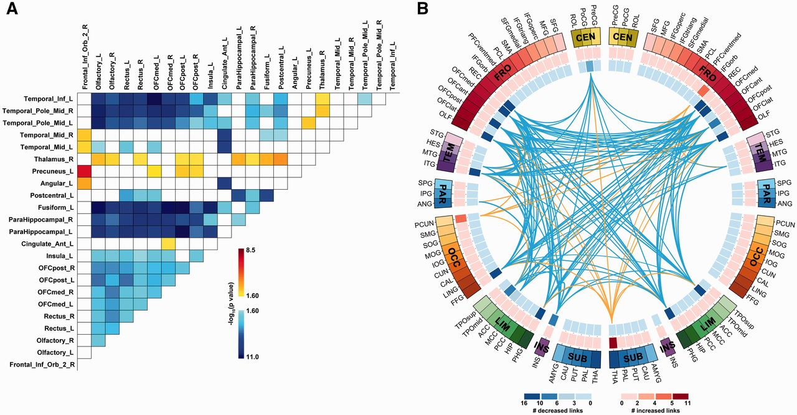
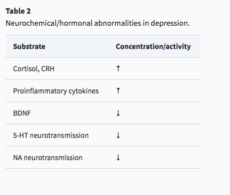

Disorders of affect
Major Depressive Disorder (MDD)
Symptoms
- Unhappy mood, insomnia, lethargy, loss of pleasure, interest, energy
- Agitation
- Lasting for several weeks or more
- Experienced by ~7% Americans in any year
- Prevalence (up to ~20% lifetime)
- Females 2-3x males, higher 40+ years of age
- postpartum anxiety and depression in 10-20% of mothers
- MZ concordance ~60% vs. DZ ~20% suggests genetic component

Neurobiology
Reduced sizes of brain regions
- Reduced hippocampal volumes
Left Hippocampus


Hypoactivity
- Frontal and temporal cortex
- Anterior cingulate
- Insula
- Cerebellum

Hyperactivity

- Both valence-specific and non-valence specific

Altered connectivity
- Increased connectivity between resting state network regions and dorsal PFC (Sheline, Price, Yan, & Mintun, 2010)

(Cheng et al., 2016)
- Resting state fMRI (rsFMRI) in 421 patients with major depressive disorder and 488 control subjects.
- Reduced connectivity between orbitofrontal cortex (OFC) and other areas of the brain
- Increased connectivity between lateral PFC and other brain areas


Summary

Pharmacological factors

- Endocrine
- Thyroid dysfunction (Medici et al., 2014)
- Altered cortisol reactivity (Burke, Davis, Otte, & Mohr, 2005)
- Brain-derived neurotrophic factor (BDNF)
- Proinflammatory cytokines
Monoamine (5-HT and NE) hypothesis
- More: euphoria
- Less: depression
- Evidence for
- Resperine (antagonist for NE & 5-HT) can cause depression
- Low serotonin (5-HT) metabolite levels in CSF of suicidal depressives (Samuelsson, Jokinen, Nordström, & Nordström, 2006)
Measuring 5-HT
- CSF, platelets, plasma, urine, saliva
- CSF & platelets correlate highly (Audhya, Adams, & Johansen, 2012)
- But salivary 5-HT does not correlate with mood symptoms (Leung et al., 2018)
Treatments
Psychotherapy: Neural responses
- increased rostral anterior cingulate cortex (rACC) activation vs. decrease in healthy controls
- decreased activity in left precentral gyrus


Electroconvulsive Therapy (ECT)
- Last line of treatment for drug-resistant depression
- Electric current delivered to the brain causes 30-60s seizure.
- ECT usually done in a hospital’s operating or recovery room under general anesthesia.
- Once every 2 - 5 days for a total of 6 - 12 sessions.
- Remission rates of up to 50.9% (Dierckx, Heijnen, Broek, & Birkenhäger, 2012)
- Seems to work via
- Anticonvulsant effects (blocking Na+ channel or enhance GABA function)
- Neurotrophic (stimulates neurogenesis) effects
Drugs
- Monoamine oxidase (MAO) inhibitors
- MAO inactivates monoamines in terminal buttons
- MAO-I’s boost monoamine levels
- Tricyclics
- Inhibit NE, 5-HT reuptake
- Upregulate monoamine levels, but non-selective = side effects
- Selective Serotonin Reuptake Inhibitors (SSRIs)
- Fluoxetine (Prozac, Paxil, Zoloft)
- Prolong duration 5-HT in synaptic cleft
- Also increase brain steroid production
- Serotonin/Norepinephrine Reuptake Inhibitors (SNRIs)
Drug effectiveness
- STAR*D trial
- On SSRI for 12-14 weeks. ~1/3 achieved remission; 10-15% showed symptom reduction.
- If SSRI didn’t work, could switch drugs. ~25% became symptom free.
- 16% of participants dropped out due to tolerability issues
- Took 6-7 weeks to show response
- But recent reanalyses (Pigott, Kim, Xu, Kirsch, & Amsterdam, 2023) suggest “In contrast to the STAR*D-reported 67% cumulative remission rate after up to four antidepressant treatment trials, the rate was 35.0%…”
Who benefits from drug therapy?
- May depend on
- Early life stress
- Brain (amygdala) response to emotional faces (Goldstein-Piekarski et al., 2016)
- Low-stress + low amyg reactivity -> > responding
- High stress + high amyg reactivity -> > responding

Problems with monoamine hypothesis
- Too simplistic
- NE, 5-HT interact
- Drugs fast acting (min), but improvement slow (weeks)
- “No correlation between serotonin and its metabolite 5-HIAA in the cerebrospinal fluid and [11C]AZ10419369 binding measured with PET in healthy volunteers.” (Tiger et al., 2015)
- Monamine depletion studies…
“…we performed the first meta-analysis of the mood effects in ATD and APTD studies. The depletion of monoamine systems (both 5-HT and NE/DA) does not decrease mood in healthy controls. However, in healthy controls with a family history of MDD the results suggest that mood is slightly decreased…by [monoamine depletion]…” (Ruhé, Mason, & Schene, 2007)
Acute tryptophan depletion (ATD) targets 5-HT; phenylalanine/tyrosine depletion (APTD) targets DA; alpha-methyl-para-tyrosine (AMPT) targets NE/DA.
“The serotonin hypothesis of depression is still influential. We aimed to synthesise and evaluate evidence on whether depression is associated with lowered serotonin concentration or activity in a systematic umbrella review of the principal relevant areas of research. PubMed, EMBASE and PsycINFO were searched using terms appropriate to each area of research, from their inception until December 2020. Systematic reviews, meta-analyses and large data-set analyses in the following areas were identified: serotonin and serotonin metabolite, 5-HIAA, concentrations in body fluids; serotonin 5-HT1A receptor binding; serotonin transporter (SERT) levels measured by imaging or at post-mortem; tryptophan depletion studies; SERT gene associations and SERT gene-environment interactions…The main areas of serotonin research provide no consistent evidence of there being an association between serotonin and depression, and no support for the hypothesis that depression is caused by lowered serotonin activity or concentrations.” (Moncrieff et al., 2022)
Evaluating treatments
Ketamine, again
- Relieves depressive symptoms relatively quickly (Berman et al., 2000; Zarate et al., 2006)
- Boosts synaptic spine formation (Li et al., 2010) and reverses effects of induced stress
- May operates via endogenous opioid system (Jiang, DiLeone, Pittenger, & Duman, 2024)
Putative pathway of pathology
- Depression ~ chronic stress (Mahar et al., 2014)
- Stress -> chronic HPA axis activity
- Chronic HPA activity -> neuronal atrophy in hipp & PFC
- Stress & cortisol decrease expression of brain-derived neurotrophic factor (BDNF)
- BDNF boosts neurogenesis
- SSRIs act via BDNF, as do NMDA receptor antagonists (e.g., ketamine)


Putting the pieces together

Bipolar disorder
Background
- Formerly “manic depression” or “manic depressive disorder”
- Alternating mood states
- Mania or hypomania (milder form)
- Depression
- Cycles 3-6 mos in length, but
- Rapid cycling (weeks or days)
- Suicide risk 20-60x normal population, Baldessarini, Pompili, & Tondo (2006)
 - 1-3% lifetime prevalence, subthreshold affects another ~2% Merikangas et al. (2007) - Subtypes + Bipolar I: manic episodes, possible depressive ones + Bipolar II: no manic episodes but hypomania (disinhibition, irritability/agitation) + depression
- 1-3% lifetime prevalence, subthreshold affects another ~2% Merikangas et al. (2007) - Subtypes + Bipolar I: manic episodes, possible depressive ones + Bipolar II: no manic episodes but hypomania (disinhibition, irritability/agitation) + depression
- Psychosis (hallucinations or delusions)
- Anxiety, attention-deficit hyperactivity disorder (ADHD)
- Substance abuse
(Neuro)biology of
Genetics
- Overlap between bipolar disorder and schizophrenia
- Genes for voltage-gated Ca++ channels
- Regulate NT, hormone release
- Gene expression, cell metabolism
- Craddock & Sklar (2013)
Brain responses to emotional faces ≠ depression


Amygdala, hippocampus volume reduced; ventricles larger


Drug treatments
- Anti-depressants not especially effective (Sidor & MacQueen, 2012)
- Mood stabilizers
- Lithium (Li)
- Valproate (Depakote)
- Anticonvulsants
- Typically used to treat epilepsy
- GABA agonists
- e.g. lamotrigine (Lamictal)
- Atypical antipsychotics
Lithium
- “Discovered” accidentally
- John Cade discovered in 1948
- Injections of manic patients’ urine with a lithium compound (chemical stabilizer) into guinea pig test animals
- Had calming effect
- Earliest effective medications for treating mental illness
- Effects of
- Reduces mania, minimal effects on depressive states
- Preserves PFC, hipp, amyg volumes
- Has other ‘neuroprotective’ effects (Machado-Vieira, Manji, & Zarate, 2009)
- downregulates DA, glutamate; upregulates GABA
- modulates 5-HT, NE
- levels can be tested/monitored via blood test
- (Malhi, Tanious, Das, Coulston, & Berk, 2013)
Other treatment options
- Psychotherapy
- Electroconvulsive Therapy (ECT)
- Sleep medications
Prospects
- STEP-BD cohort (\(n=1,469\))
- 58% achieved recovery
- 49% (of recovered) had recurrences within 2 years
- Residual depressive symptoms can persist
- (Geddes & Miklowitz, 2013)
BP summed-up
- Changes in mood, but ≠ depression
- Genetic + environmental risk
- Changes in emotion processing network activity, size of hippocampus
- Heterogeneous
- No simple link to a specific NT system
The disordered mind
- Multi-level, multi-method, multi-variate approaches essential to understanding mental illness
- Developmental processes across the life span
- Networks all the way down…